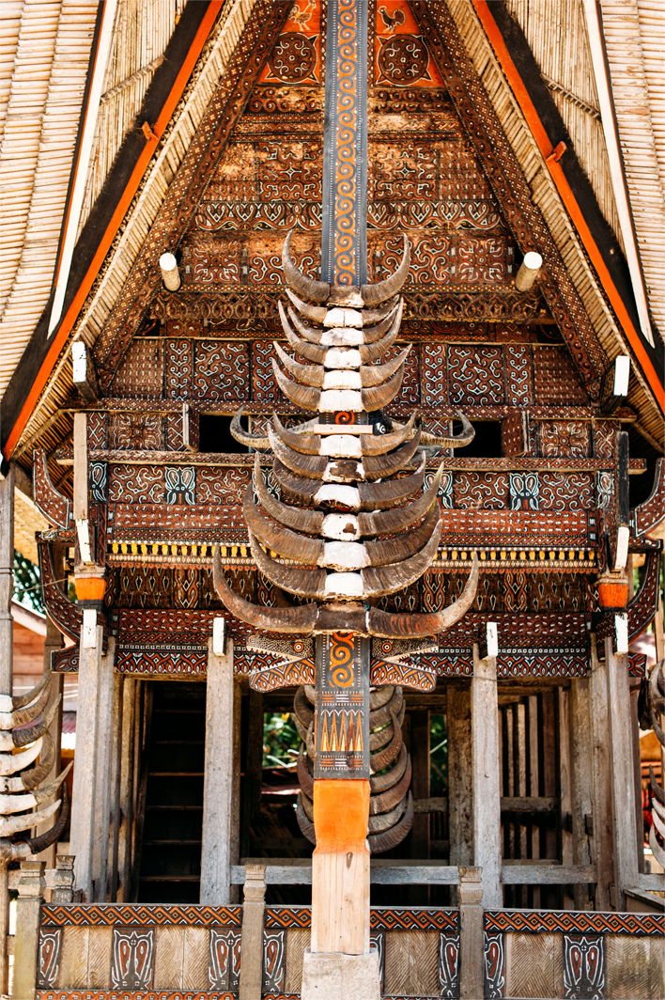

Cagar Budaya
Berdasarkan Undang-Undang Republik Indonesia Nomor 11 tahun 2010, Cagar Budaya adalah warisan budaya bersifat kebendaan berupa Benda Cagar Budaya, Bangunan Cagar Budaya, Struktur Cagar Budaya, Situs Cagar Budaya, dan Kawasan Cagar Budaya di darat dan/atau di air yang perlu dilestarikan keberadaannya karena memiliki nilai penting bagi sejarah, ilmu pengetahuan, pendidikan, agama, dan/atau kebudayaan melalui proses penetapan.
Lanjut ke PencarianWarisan Budaya Takbenda
Warisan Budaya Takbenda (WBTb) diatur dalam UU No 5 Tahun 2017 tentang pemajuan kebudayaan, beserta objek-objeknya, diantaranya tradisi lisan, manuskrip, adat istiadat, ritus, pengetahuan tradisional, teknologi tradisional, seni, bahasa, permainan rakyat, olahraga tradisional. Dalam pengertiannya, WBTb merupakan peninggalan atau warisan budaya yang sifatnya tidak dapat dipegang (intagible/abstrak) namun ada disekitar kita.
Lanjut ke Pencarian


Lembaga Kebudayaan
Menurut Peraturan Pemerintah (PP) Nomor 87 Tahun 2021 pasal 1 ayat 13 tentang Peraturan Pelaksanaan Undang-Undang Nomor 5 Tahun 2017 tentang Pemajuan Kebudayaan, Lembaga Kebudayaan adalah organisasi yang bertujuan mengembangkan dan membina Kebudayaan.
Lanjut ke Pencarian

Data Spasial
Menampilkan representasi geografis dari data melalui peta sebagai referensi tiap-tiap objek.
